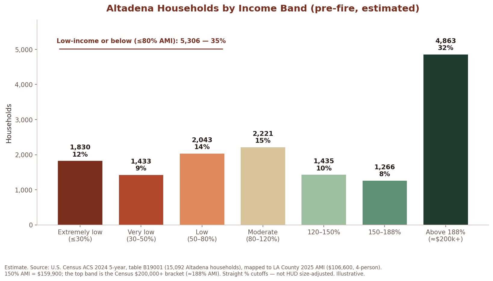

What the best evidence on disaster recovery tells us about rebuilding well — led by our own community, on our own plan — and how we get there together.
SB 1090 — a narrow, time-limited pause on speculative SB 9 / SB 1123 lot-splitting — is the urgent first step. But a pause is not a plan. Decades of disaster-recovery research, from federal agencies to international institutions, converge on a few clear principles for how Altadena should rebuild — and every one points back to the same conclusion: pass SB 1090 now, then build on it.
The leading guidance agrees: recovery succeeds when it is locally led, aligned with existing local plans, and shaped through community participation — not overridden by one-size-fits-all state mandates. Higher government helps most by funding technical assistance, not imposing density from outside. That is the case for SB 1090's local pause.
Sources: GFDRR / World Bank, Housing & Settlements Recovery Guidance Note (2017); FEMA, Pre-Disaster Housing Planning Checklist (2025); APA, Planning for Post-Disaster Recovery; UN-Habitat, Urban Planning Responses in Post-Crisis Contexts; NGA, Housing Resilience White Paper (2019).
Ignoring local land-use plans produces sprawl and rebuilding in unsafe places. Altadena already has its blueprint — the West San Gabriel Valley Area Plan (WSGVAP), adopted December 2024, weeks before the fire — which already added multifamily capacity and density in our commercial corridors. SB 1090 protects the community's right to rebuild on that plan, especially in high-fire WUI areas where land-use is life-safety.
Sources: GFDRR / World Bank Guidance Note; LA County WSGVAP. (Supports a "special statute" for Altadena under Cal. Const. Art. IV, § 16.)
Missing-middle homes — duplexes, triplexes, ADUs, cottage courts — add income diversity without large-scale disruption, ideal for post-disaster rebuilding. The research favors mixed-income, incremental, owner-driven "self-build" near services. It grows supply gradually while keeping neighborhood character — the opposite of speculative ten-unit subdivision.
Sources: GFDRR / World Bank Guidance Note; Place-Based Recovery Strategies (NCBI / Institute of Medicine); FEMA; APA & Terner Center.
Recovery is when displacement and gentrification move fastest, pricing out the residents it's meant to serve. The evidence-based fix is durable affordability from the start — community land trusts, deed-restricted homes, and mission-driven nonprofit developers — exactly the pathways SB 1090 keeps open.
Sources: GFDRR / World Bank Guidance Note (displacement / gentrification); APA, Planning for Post-Disaster Recovery (missing-middle + community land trusts).
Best practice pairs a temporary pause on incompatible state mandates (broad by-right lot splits) with requirements for income-diverse, owner-driven rebuilding and real community input. That pairing is SB 1090 — the pause isn't the policy, it's the breathing room to design one.
Sources: GFDRR / World Bank Guidance Note; FEMA / HUD pre-disaster planning; UN-Habitat.
What the post-fire data says about the recovery Altadena faces. Several figures are preliminary or modeled, flagged as such.
Altadena is a bedroom community, not a job center: daytime population drops about 22% (−9,064) as residents commute to Pasadena and L.A.; only ~31% both live and work here. So recovery isn't about replacing jobs — it's about getting the same residents back into homes they can afford. The answer: rebuilding led by local nonprofits and community land trusts for the lower- and moderate-income owners and renters who lived here — not market-rate construction that prices survivors out. SB 1090 protects that path.
Sources: U.S. Census LEHD/LODES via City-Data; ACS via Data USA.
9,418 structures destroyed (roughly 6,000 homesestimate) and 1,076 damaged; 14,021 acres; 19 deaths, all west of Lake Avenue — California's second most destructive wildfire.
Source: CAL FIRE — Eaton incident. Structure/acreage/fatality counts confirmed; the ~6,000-homes split is an estimate (CAL FIRE reports a combined structures category).
As of March 31, 2026preliminary: ~3,000 rebuild applications (about half of affected households), ~2,000 permits issued, 1,000+ homes under construction, a few dozen completed. Permit review now ~31 business days (was ~131). A rebuild takes ~2–2.5 years; full recovery ~5–10 yearsestimate. For survivors, the real bottleneck is insurance, not permitting (47% report payout delays).
That's exactly why market-rate SB 9 / SB 1123 projects must be paused here. Speculators are cash-backed and face no insurance delay, so they'd race their by-right subdivisions through the County's finite permitting, inspection, and contractor pipeline while survivors wait on insurers — cutting in line ahead of families trying to come home. SB 1090 reserves the pipeline for survivors, not speculation.
Sources: LA County / Supervisor Barger via Pasadena Now; Catalyst California, "Red Tape to Recovery"; LA County permitting dashboard. March 2026 figures — check the live dashboard for current numbers.
Pre-fire: ~42,000 people (2020 Census; ACS ~41,705), ~15,400 households. One year out, rebuild-permit filings among severely-damaged owners doubled from 23% to 48%, but only ~30% had started construction, and "no visible recovery action" fell from ~70% to 44%. Underinsurance is projected at 75–80%estimate. The people who lived here are trying to return — slowly, and underinsured.
Source: UCLA Latino Policy & Politics Institute, "One Year Later, Who's Coming Back?" Return/permit figures confirmed; underinsurance is an estimate.
~$7.6 billion in Eaton claims paid by Nov 2025 (~78% of recovery funding) — but coverage trails cost: ~$628K covered vs. ~$867K to rebuild, a ~$300K (41%) gapsingle-insurer estimate. Underinsured survivors can't outbid cash speculators — another reason to pause speculation.
Sources: CA Dept. of Insurance — Wildfire Claims Tracker; LAist.
The data shows SB 1090 protects an existing income-diverse, gentle-density community. It isn't anti-housing — it's anti-erasure.
The $128,720 median household income hides a wide split: renters earn ~$73,000 vs. ~$150,000 for owners (about half). 13% of tenant households are in poverty vs. 3% of owners; most renters are cost-burdened; 60%+ of Latino renters are rent-burdened; ~22% of tenant households are headed by someone 65+. SB 1090's affordable carve-outs target exactly this population.
Source: UCLA LPPI, "Rebuilding for Whom?", ACS 2019–2023.

Renters are ~23% of households (3,300+). The community had ~2,150 modeled rental unitsestimate, including ~792 rent-stabilized (~37% of recorded rentals), two-thirds inside the fire perimeter. Median rental build year: 1946; average 1-bed rent ~$1,792, ~40% under $1,500/mo. These units are affordable because they're old — the market can't rebuild them at that price once they're flipped. Only deed-restricted, mission-driven rebuilding (which SB 1090 protects) brings that housing back.
Source: UCLA LPPI. Rental and rent-stabilized counts are modeled estimates with an undercount caveat.
Altadena's stock is mostly single-family and 2–4-unit properties; rent-stabilized units skew to duplexes and fourplexes, and ADUs were normal pre-fire. Bungalow courts (a SoCal type born in 1909 Pasadena) are part of the fabric. Gentle density here isn't an outside imposition — it's the existing pattern, which SB 1090's carve-outs preserve while blocking speculative ten-unit subdivision.
Sources: UCLA LPPI; Altadena Heritage; bungalow court history.
Altadena has one of the nation's highest Black homeownership rates — ~75%2020 Decennial; some cite ~81%, and ~70% as far back as 1970 (vs. 38% countywide), rooted in West Altadena's 1939 HOLC-redlined blocks. Yet the Black population share fell from 43% (1980) to ~18% (2020), trending toward erasure by 2040modeled projection; 57% of Black homeowners are 65+ and 45% cost-burdened. Speculation accelerates a decades-old loss — SB 1090 slows it.
Source: UCLA Center for Neighborhood Knowledge. Rates and long decline confirmed; 2040 is a modeled projection (~75% is the better-sourced figure).
Gentrification was the local concern before the fire: LA County's WSGVAP (Dec 2024) included an Anti-Displacement Brief — an official acknowledgment of the risk. The fire poured fuel on it: 49% of early post-fire sales (Feb–Jul 2025) went to corporate buyers, up from ~10% a year earlier, concentrated in West Altadena. SB 1090 is the brake.
Sources: SAJE / Inclusive Action, "Confronting Disaster"; LA County — WSGVAP; LAist.
Pausing speculative lot-splitting costs the recovery nothing. Every tool Altadena needs for missing-middle, income-diverse rebuilding stays fully available — SB 1090 only removes the by-right speculative shortcut.
The conclusion: Altadena already has everything it needs to rebuild more housing — and more affordably. SB 1090 simply removes the speculative shortcut that prices survivors out.
Every point on this page leads to one conclusion: responsible recovery begins with passing SB 1090 — now, this session. It is the only measure on the table that stops speculative, market-rate SB 9 and SB 1123 projects from carving up and consolidating burned lots before survivors can rebuild — while keeping every responsible pathway open: already-vested projects, owner-occupants, community land trusts, qualified nonprofits, and 100% deed-restricted affordable housing.
The window is closing in real time. A recorded subdivision can never be undone, and every month of delay lets outside investors lock in irreversible changes to Altadena's blocks. SB 1090 is the pause that keeps the most consequential decisions about Altadena's future in the hands of the people who live here — and buys the time to get recovery right. Pass SB 1090, and make it effective immediately.
Once SB 1090 holds the line, the same evidence supports a fuller recovery framework in a later session — building on the pause with local-plan-aligned protections, community-engagement and equity requirements, support for missing-middle and income-diverse rebuilding, and funding for community land acquisition. But that work only matters if we secure the ground first.